Deploy and Integrate (Team)¶
Note
These instructions assume that you have Cloud Pak for Business Automation 21.0.3 installed along with Open Prediction Service (OPS).
The CP4BA cluster that has been provisioned for you for Tech Academy meets these requirements.
Warning
You must use the artifacts downloaded from this site.
Do NOT use the original SWAT artifacts you may have downloaded previously as these are from a Production deployment of CP4BA and there are subtle differences.
Instructions¶
There are 7 sections that you will need to import and build the Client Onboarding1 solution into your team cluster.
Below are the recommended tracks so that different members of the team can be the primary driver of the lab. Please designate the primary driver using a team member that may not be the most experienced in each capability. As a recommendation, use the Slack huddle feature so members of the team can clearly see the steps that are being performed.
| Track | Section(s) | Description |
|---|---|---|
| A | 1 2 |
Import the ADS ML Model Import the ADS Project |
| B | 4 5 |
Import the Workflow Solution Import objects into FileNet Content Manager |
| C | 6 7 |
Import the Business Automation Application app Import the Business Automation Insights data |
| D | 3 9 |
Setup the RPA Server (optional) Validate the RPA Integration (optional) |
Section 8 - Validate Client Onboarding solution should be completed as a team when all the section have been completed.
You can access the github repo for this event using the link in the top-right corner. This will provide access to PDF's, pre-built solutions and lab assets.
Installation Links¶
Expand to view
Each team will be allocated a pre-configured CP4BA cluster, hosted using an enterprise account on IBM Cloud to which you have been invited.
Log into IBM Cloud and switch to the enterprise account 2326304 - itztsglenablement01 as shown below:
Select the burger icon in the top-left corner and select OpenShift, then Clusters

To find your cluster enter your allocated lab name in the search box, (here I'm using lab01).
Click on the three dots on the right hand side of the screen adjacent to your cluster and select OpenShift Web Console.
Login to the OpenShift Web Console and locate the config map called icp4adeploy-cp4ba-access-info.

Select the icp4adeploy-cp4ba-access-info config map then select YAML and then Download

You will find all the links and credentials for your deployment. Specify Enterprise LDAP when you log into an application.
Note
A deeper understanding of each of the sections below will be covered in the labs in the Rebuild section.
1. Import the ADS ML Model¶
Expand to view
1. Open the ADS ML Service (Open Prediction Service) in your browser.
To find the link for this component, open the OpenShift web console and select Networking then Routes. These are all the public links exposed by the OpenShift cluster. To easily find the ADS ML Service public link, select ads-ml-service from the project dropdown near the top of the screen as shown in the diagram below.
From the Location column, click on the link to open the Swagger UI for the ADS ML Service.

2. Under manage, expand the POST /models Add Model section
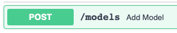
3. Click on Try it out
4. Use the contents of the addModel.json file as the request body. It's easier if you right click on the link and open it in a new tab.
5. Click on Execute and scroll down to the actual server repsonse (scroll past the example)
6. Copy the ID of the created model from the response body. It is typically 1 as this ADS ML Service is currently empty.
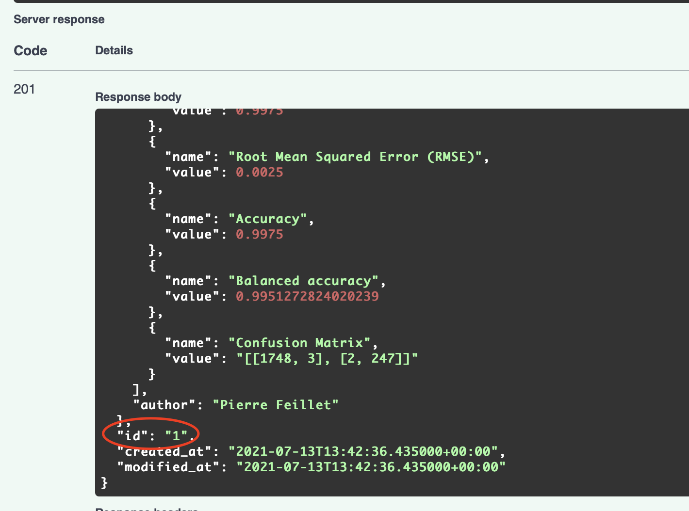
7. We've added the meta-data of the model, now we must add the model binary. Under manage, expand the POST /models/{model_id} Add Binary section
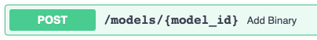
8. Click on Try it out
9. Use the ID copied from the last API call, typically 1.
10. In the request body, keep pickle selected as the format
11. Download this pickle file onto your computer and use it as as the selected file
12. Click on Execute. The response code is 201. The model named service-payment-default-risk is succesfully deployed.
The following instructions validate that this deployment can be safely executed.
13. Under run, expand the /predictions section
14. Click on Try it out
15. Use the contents of the runModel.json file as the request body
Note: from your browser, please ensure to select Raw Data to view/copy the request body:
16. Update the $PREDICTION-ID$ in the json to the ID copied before, typically this is 1.
17. Click on Execute. The result should be as follows:
`{ "result": { "predictions": 0, "scores": [ 0.9068544064724676, 0.0931455935275324 ]}}`
Tip Keep this browser window open, you'll need the URL in the next step.
Success
ℹ️ You have successfully imported the ADS ML Service, please proceed to the next section
2. Import the ADS Project¶
Expand to view
Warning
The ADS Project requires an empty github repo and a git API token, if your team doesn't have git knowledge please contact an instructor.
Public github seems to be the most reliable.
Create a Personal Access Token under Developer Settings.
If you need additional guidance, please refer to section
Item 91 - Creating a git repo for ADS in the Troubleshooting section.
-
Download ClientOnboardingDecisions.zip
-
Create an empty GIT repo and get its URL and API Key
-
Log into your CP4BA cluster and Open IBM Business Automation Studio, select LDAP authentication at the login screen.
-
Click to the menu in the upper-left corner and go to
Design→Business Automations -
Click on
Create→Decision Automations -
Provide
Client Onboardingas the project name and clickCreate -
Once the editor loads, click on
Importand import the previously downloaded file ClientOnboardingDecisions.zip into the project
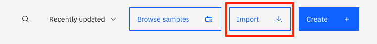 -
Click on
Connect to Githubicon

-
Enter the URL and API key of the GIT repo created previously
-
Click on
Connectin the top-right corner -
Go to the
Machine learning providerstab -
Click on
Newin the top-right corner -
In the dialog, select
Open Prediction Serviceas theType -
Enter
OPSas the name -
Use the ADS ML Service (Open Prediction Service) URL in the
URLfield Note: This is the same URL you used for importing the predictive model without the/docssuffix at the end. -
Click on
Test Connection

-
Click on
Save -
Go back to the
Client Onboardingproject

-
Open
Client Onboarding Decisions -
Click on
Machine learning scoreboard -
Click on
Connectand selectOPSas the machine learning provider -
Expand the
service-payment-default-riskML model and select theservice-payment-default-riskdeployment
-
Click
Nexttwice toTest invocation -
Test the decision by entering the following values:
- clientAnnualRevenue: 15708854
- clientExistenceDuration: 12
- clientEmployeeNumber: 3
- clientIndustry: 0
-
Click on
Run -
Verify that the output matches the following:
{ "result": { "predictions": 1, "scores": [ 0.014675209287711932, 0.9853247907122881 ] } }

-
Click on
Next -
Click on
Generate from test outputthen clickOK. Verify thatpredictionsandscoresare added to the output schema. -
Click on
Applyin the upper-right corner -
Under
Share changesat the top, click on the number of changes

-
Click on
Shareand thenShareagain in the popup -
In the
View historytab, click onVersion +and create a new version namedv21 -
In the
Deploytab, expandv21, click onDeployand wait for deployment to complete
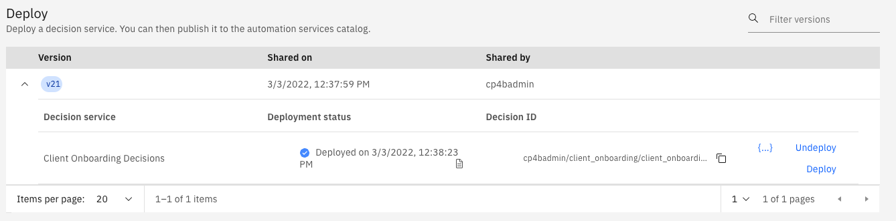 -
Back in the studio, go to
Design→Business Automations→Decisionsand click on theClient OnboardingDecision project -
Select the three-dot menu for
v21and click onPublishand then click onPublishagain to make the automation service available without restricting access.
Success
ℹ️ You have successfully imported the ADS project.
3. Setup the RPA Server (optional)¶
Expand to view
Note: You only need to perform these steps if you want to demo the RPA execution. You can choose to skip the execution of the RPA bot when you import the Workflow solution.
- Request auto-onboarding onto the SWAT RPA Tenant using this form
- Reserve an environment from here using your IBMID.

- Click Environments on the left panel, and then click computer icon.

- Click Reserve for now, then click Submit.

- On the reservation page, make the appropriate selections as below. Once done, click Submit.
- Once you have reserved an environment, you will receive an email with a link to access the management console for the environment including a password (Desktop Access Information). It also contains a URL to access the IBM RPA Rest Service remotely (Application Service Information), please copy the Application Service Information URL and change HTTP to HTTPS. This will be used in the Workflow solution.
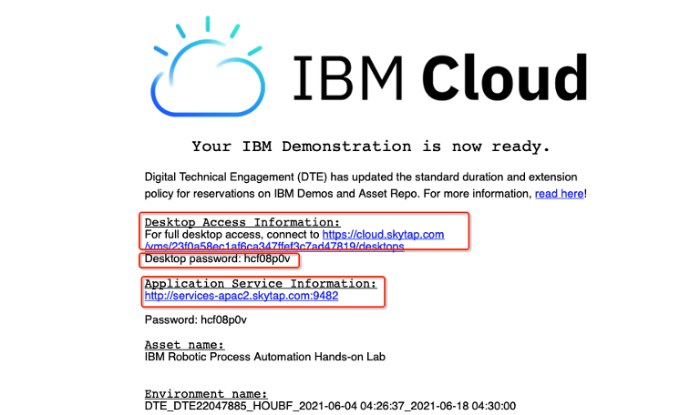 - Click the Desktop Access link above to open your environment. When you are prompted to enter environment password, enter the desktop password above. Wait a few minutes, your environment will be started as below.

- Click VM 5 – RPA to open the RPA client environment.
- Start Firefox, click IBM RPA license from the bookmark toolbar to open IBM RPA license manager.

- You will see the message Not Licensed. Click Activate button to open the License Activation window.
- Enter your RPA license ID and Password, (ask the instructors for this) then click the Activate button. Once after the license is activated, you should be able to see the number of licenses available for each component.

Success
ℹ️ You have successfully set up the RPA server, please proceed to the next section
Once you have setup the RPA server, import the Workflow solution.
4. Import the Workflow Solution¶
Expand to view
-
ℹ️ [SKO UPDATE] Download the workflow app. (This version contains minor changes to account for environmental differences). Workflow twx file.
-
Login to IBM Business Automation Studio
-
In the top-left corner, click on the menu icon and go to Business automations.
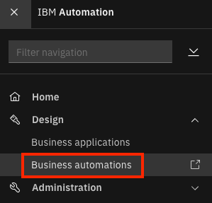 -
Click on Workflow.

-
Click on the Import button.
-
Click on Browse and select the twx file downloaded in Step 1.
-
Click on OK.
-
Once the import completes, click on tile for the Client Onboarding Workflow project (Don't click on the open button but just the tile).
-
Click on the 3-dot menu next to the Open button on the right and select Open in Process Designer 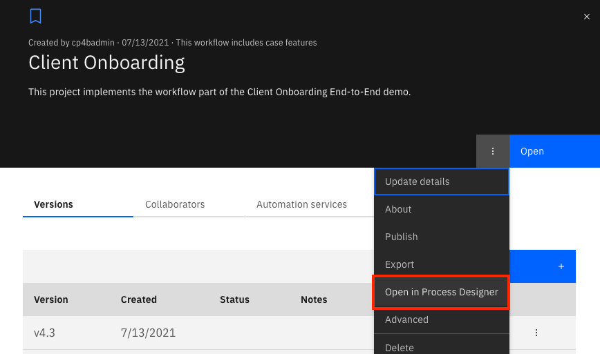
Note
The version numbers and dates in the screenshots maybe different from what you see in your system
-
In Process Designer, click on the Environment Variables tab.
-
Fill out credentials for a gmail account in the emailID and emailPassword fields under the Default column. Note that the password here must be an App Password and not your gmail password. This gmail account is used by the solution to send outbound emails. If you don't have a gmail account configured with an app password you should create one now or use the default one provided.

-
If you are showcasing ADP as a part of the scenario, enter the ADP host, username, password, and projectID in their respective fields. If you are not, set adpEnabled to false.
Note
ℹ️ For 2022 SKO Tech Academy, we will not be showcasing ADP in this scenario
-
For the documentUploadPage environment variable, use the URL for Business Automation Navigator for CP4BA and add "?desktop=CODocumentUpload". You will add this desktop to the navigator in a later step. The default value is from another environment and illustrates a typical value but you must build yours using your navigator URL.
-
The RPA bot is currently only executed if the user running the scenario matches the rpaBotExecutionUser. You can change this by updating the value of the rpaBotExecutionUser environment variable. In this environment the rpaBotExecution user will be called cp4admin, so only set this value to cp4admin once your option RPA server and configuration is complete otherwise the workflow will encounter errors. It is recommeded that you DO NOT set this value to be cp4admin until you have validated that the end to end COB scenario works without RPA first.
-
If you are executing the RPA bot, update the value for the rpaServer environment variable from the environment you reserved using the previous step.
-
The default target object store name is TARGET. If you have changed this, update the value for the tosName environment variable. Demo environments have the default target object store name of TARGET.
-
In the top-right corner, click on the Finish Editing button.
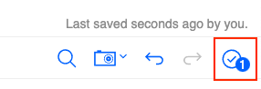 -
In the top-left corner, click on Business automations to go back to the BA Studio.
-
Click on Open for the Client Onboarding Workflow automation project to open it in the Case Builder.

-
In the top-right corner, click on the Deploy button. The deployment will take a few seconds. Wait until there is a green checkmark next to the button.

-
In the top-left corner, click on Automations to go back to the BA Studio.
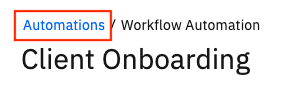 -
Click on the tile for the Client Onboarding Workflow automation project.
-
Click on the 3-dot menu for latest version of the project and click on Publish.

-
Close the dialog that shows that the automation services were published successfully.
-
In the top-left corner, click on the menu icon and go to Design → Business automations.
-
Click on Create → External.
-
Select Business Automation Workflow under Select the connection type. Note: this is now done automatically.
-
Click on Next. Note: this is now done automatically.
-
In the Connection name field, enter External BAW System.
-
ℹ️ [SKO UPDATE] In the System URL field, use the Cloudpak Dashboard URL you retrieved from the confing map add /bas to the end of this URL.
-
ℹ️ [SKO UPDATE] Enter the cp4admin credentials you retrieved from the confing map and click Next.
-
In the Select a process application dropdown, select Client Onboarding.
-
Select the checkbox for New Client Onboarding Request.
-
Click on Next.
-
In the Name field, enter Client_Onboarding_Workflows_External.
-
Click on Publish.
Success
ℹ️ You have successfully published the workflow solution.
Go to top of subsection | Go to top of section | Go to top of page
5. Import objects into FileNet Content Manager¶
Expand to view
Warning
You must complete the Import the Workflow Solution prior to this step as the document subclasses are created during the workflow import
-
Login to ACCE using the URL for "Content Platform Engine administration" You can switch to english locale if needed by clicking on the persona icon in upper right corner, and select
Change Language and Locale Settings. -
Open the target object store (
TARGETORBAWTOS), by clicking on it. In the Tech Academy systems this isTARGETso don't be alarmed by the image below that showsBAWTOS.
-
Create a new folder named
Client Documentsunder the root folder.-
On the navigation area on the left side, open
Browseand click onRoot folder.
-
Click on the
Actionspulldown menu and click onNew Folder.
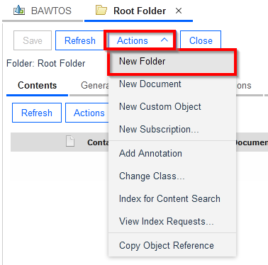 -
The
Define New Folders Dialogopens on the right side. Set the Folder name toClient Documents. Then click onNext >two times, then onFinish.

-
-
In the
Client Documentsfolder, create the documents from the table below (see instructions below the table on how to add a document). It is recommended that you open each PDF and image in a new browser tab and save the PDF or image from that tab :
| Document | Document Title | Document Class | Document Properties |
|---|---|---|---|
| Banking Information - Automation Elite Inc.pdf | Banking Information - Automation Elite Inc | Banking Information | Client Name: Automation Elite Inc. Account Number: 1179476345 |
| Certificate of Incorporation - Automation Elite Inc.pdf | Certificate of Incorporation - Automation Elite Inc | Client Document | Client Name: Automation Elite Inc. |
| Utility Bill - Automation Elite Inc.pdf | Utility Bill - Automation Elite Inc | Utility Bill | Client Name: Automation Elite Inc. Service Address: 3974 Carson St, Lansing, MI 48911 |
| June Marie - Driver's License.png | June Marie - Driver's License | Client Document | Client Name: Automation Elite Inc. |
| Legacy Consulting - Banking Information.pdf | Legacy Consulting - Banking Information | Banking Information | Client Name: Legacy Consulting Account Number: 7250512345 |
| Legacy Consulting - Certificate of Incorporation.pdf | Legacy Consulting - Certificate of Incorporation | Client Document | Client Name: Legacy Consulting |
{kind=link}
Perform the steps below for each document in the table above¶
Expand to view (REQUIRED)
a. In the navigation area, navigate to "Browse", and "Root Folder". Click on "Client Documents" to bring up the contents of the folder. From the opened "Client Documents" folder, invoke "New Document" from the Actions pulldown menu.

b. In the New Document wizard, on the first page provide the document title, and select the Document Class from the table. Then click "Next".
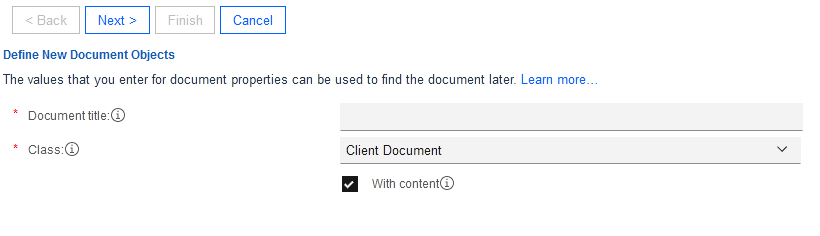
c. On the "Document Content Source" page, click on "Add" in the "Content Element" section. Use the popup window to upload the document. Click "Browse" and locate the document on your harddisk, then click on "Add Content" to close the dialog. Then click "Next" on the "New Document" wizard.

d. On the next page, provide the property values, according to the table above. No further changes are required, so press "Next" until the final page, then "Finish" and then "Close".
Success
ℹ️ You have successfully imported the objects required for the solution into FileNet Content Manager. Next, proceed to Import the Business Automation Application into IBM Business Automation Navigator.
Prepare a shared environment for labs (OPTIONAL)¶
Expand to view (NOT REQUIRED FOR SKO TECH ACADEMY)
⚠️ These steps are not required for SKO Tech Academy. If you are using an environment that will be shared by multiple teams, it is important to disable certain permissions so that the objects defined for the Client Onboarding scenario are immutable.
-
For the
Client Documentdocument class, update the security settings: remove the shared group (eg: cp4bausers) from the Default Instance Security. Update the Security and lower the access level for the cp4bausers group toModify properties.-
On the Navigation area on the left side, open
Data Design,Classes,Documentand click on theClient Documentclass to bring up its properties on the right side.
-
Select the
Default Instance Securitytab. Select the checkbox in front of the line with the shared user group (eg: cp4bausers) group and click onRemove. Then click onSave.
-
Select the
Securitytab. Select the checkbox in front of the line with the shared user group (eg: cp4bausers) and click onEdit.... In the dialog, set the permission group toModify properties, then click onOk. Click onSaveagain on theClient Documentclass properties.

-
-
Expand the
Client Documentclass on the left and repeat the previous step for theBanking InformationandUtility Billdocument classes.
Success
ℹ️ You have successfully imported the objects required for the solution into FileNet Content Manager. Next, proceed to Import the Business Automation Application into IBM Business Automation Navigator.
6. Import the Business Automation Application app¶
Expand to view
ℹ️ [SKO UPDATE] Regenerate the applications from their twx source files before importing them as apps into Navigator.
-
Download the the two twx files shown below :
In the top-left corner, click on the menu icon and go to Business applications.
Click on import and import both applications, one at at a time.
Once both applications have been imported go into each application and export a zip file.

Save these exported zip files somewhere you can find them, you'll need them for the next step. -
Login to the Navigator admin desktop (URL should end with
desktop=admin). Use the URL for Business Automation Navigator for CP4BA and add?desktop=admin -
Click on Connections in the menu on the left.

-
Select the the APPENGO connection and click on the Edit button.

-
Click on the the Connect... button.
-
Click on the Applications tab.
-
Click on the Import button.

-
Choose the the previously downloaded file ClientOnboardingRequest.zip and click on the Import button. If an information dialog pops up after import, you can close it.
NOTE: The target object store name specified in the Application is TARGET. If you are using a production environment, the target store name could be different (eg: BAWTOS). In that case, the 2nd page of the application won't show any documents as it looks for the documents in the TARGET object store. To fix this, you can import the application template in Studio from the main SWAT COB Repo and rebuild the app.
-
Click on the 3-dot menu for the Client Onboarding application and select Details,
-
Click on the Permissions tab.
-
Click on the Add Teams button.
-
In the popup, enter # in the Filter by Teams field and hit Enter.
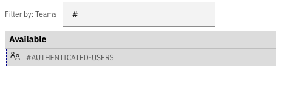
-
Select the #AUTHENTICATED-USERS team and click on the right-facing arrow to move the team to the Selected column.
-
Click on the Add button.
-
Click on the Close button.
-
Similarly, import the application ClientOnboardingDocumentUpload.zip and add the #AUTHENTICATED-USERS team to it.
-
Close the APPENGO and Connections tabs at the top.
-
In the Desktops tab, click on the Import button.
-
Download the two desktop properties files
-
Click the import button to import each desktop. Select each file in turn and click import, you can ignore any warnings.
Success
ℹ️ You have successfully imported the Business Automation Application app
7. Import the Business Automation Insights data¶
Expand to view
Warning
There is a defect in CP4BA 21.0.3 IF008 affecting Case/BAI, events from Case are not emitted. If you are building dashboards make sure these work with preloaded data and don't depend on something you've added to the Case solution. Process events are unaffected.
7.1 Prepare Data and Import Dashboard¶
Expand to view
Note
These instructions describe how to update the BAI sample data so that it can be uploaded to your CP4BA cluster. If you need more guidance to update the BAI data please refer to Item 84 - Preparing BAI Data in the Troubleshooting section, where you will find a more prescriptive set of instructions to complete steps 1, 2 and 3 below.
It is recommended to read the outline instructions below to understand the goal of this exercise, but then use the
steps in the troubleshooting section if you are not confident. If you use the alternative instructions in the
troubleshooting section for steps 1-3, please return here to complete steps 4-6.
High level instructions :
-
Download the contents of the following directory - Business Automation Insights.
-
Replace the index names in the downloaded files:
In the
process-data.jsonandcase-data.jsonfiles, the index name parameter must match the index names of your environment. The index names are dependent on the date of the install. For example, one of the index names in the provided data files isicp4ba-bai-process-summaries-completed-idx-ibm-bai-2021.11.11-000001. The date element2021.11.11must be replaced by the date in your new clusters index name. The image below shows an example of the data we need to update. You can use the tool of your choice to perform a global find & replace to update all the dates so they reflect the index names in your cluster. The VSCode editor works well, but any code editor should work. Section 84 of the troubleshooting guide describes this process and uses the sed command line tool to perform the substitution.You can get the index names for your environment using the following command (Replace
{esadmin}with the elasticsearch admin user ID, replace{espassword}with the elastichsearch admin user password & replace{eshost}with the elasticsearch URL):curl -k -XGET -u {esadmin}:{espassword} '{eshost}/_aliases' -
Once you have updated the sample data files, from the folder where you've downloaded the files and replaced the index names, run the following script to import the data (replace
{esadmin}with the elasticsearch admin user ID, replace{espassword}with the elastichsearch admin user password & replace{eshost}with the elasticsearch URL):ES_ADMIN={esadmin} ES_PASSWORD={espassword} ES_HOST={eshost} curl -k -XPOST -H 'Content-Type: application/json' -u ${ES_ADMIN}:${ES_PASSWORD} ${ES_HOST}/_bulk --data-binary @case-data.json curl -k -XPOST -H 'Content-Type: application/json' -u ${ES_ADMIN}:${ES_PASSWORD} ${ES_HOST}/_bulk --data-binary @process-data.json curl -k -XPOST -H 'Content-Type: application/json' -u ${ES_ADMIN}:${ES_PASSWORD} ${ES_HOST}/_bulk --data-binary @ads-data.json -
Open Business Performance Center and click Import.

-
Click Browse.
-
Select Client Onboarding Completed.json (downloaded earlier) and click Import.
Go to top of subsection | Go to top of section | Go to top of page
7.2 Create and configure goals¶
Expand to view
-
Open Business Perfomance Center
-
Click on the Goals tab

-
Click Create
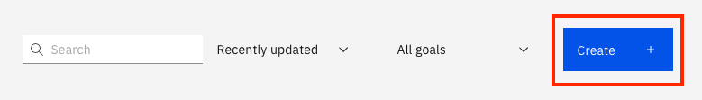
-
For Name enter Focus Corp's top Client Onboarding KPI Completed
-
For Description enter Focus on the three top KPI identified by senior management team
-
For Priority select High
-
Click Goal color to Purple
-
Your Goal definition should look exactly like this:
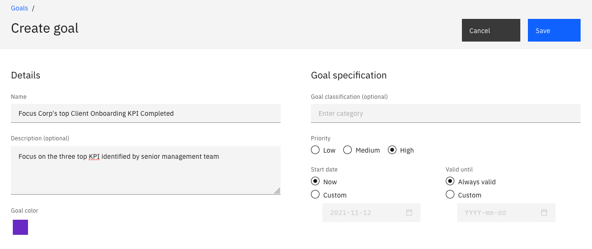
-
Click Save
-
Click on the Dashboards tab
-
Open the Client Onboarding Completed dashboard
-
For the Average Revenue from Services Fees for Approved Clients visualization, click on the Edit icon.

-
For the Business goal field, select Focus Corp's top Client Onboarding KPI from the drop-down list

-
Click Done
-
Repeat steps 11-14 to add the same goal to the Highest Service Fee by Industry Sector visualization

Success
ℹ️ You have successfully imported the Business Automation Insights Data
Go to top of subsection | Go to top of section | Go to top of page
7.3 Prepare shared environment¶
Expand to view
-
Open Business Performance Center
-
On Client Onboarding Completed dashboard select the 3-dot menu and click Share with everyone.

Success
ℹ️ You have successfully shared the environment
Go to top of subsection | Go to top of section | Go to top of page
8. Validate Client Onboarding solution¶
Expand to view
ℹ️ [SKO UPDATE] This is a quick test to validate the main parts of the solution. This test does not include RPA integration
Warning
There is a defect in CP4BA 21.0.3 IF008 affecting Case/BAI, events from Case are not emitted. If you are building dashboards make sure these work with preloaded data and don't depend on something you've added to the Case solution. Process events are unaffected.
-
Open the Client Onboarding desktop. The URL will begin with the URL from the config map called
Business Automation Navigator for CP4BA. Add?desktop=ClientOnboardingto the end of this URL, for example:https://cpd-cp4ba-starter.cp4ba-tech-academy-400310-64b8809ea4bdf3ac103ec2bdb80f1d21-0000.us-south.containers.appdomain.cloud/icn/navigator/?desktop=ClientOnboarding -
Enter
elin the client name, a type-ahead search should find Automation Elite Inc. Select Automation Elite Inc then click search. The values for the client should be populated. -
Scroll down to Service Onboarding and select Finance the Corporate Credit Card. Click Calculate Services Fee to trigger a calculation in ADS.

-
Click Review Documents and the screen below will appear. It may take a few moments for the screen to appear and the documents to load.
-
Click on Submit Onboarding Request and a confirmation screen will be displayed with a unique reference.

-
Load the BAW Process Inspector, Load Process Admin and select Process Inspector from the top menu bar. As this is a new cluster the only activity will be from from the Onboarding Request just sibmitted. Click the refresh button and you should see a similar list of tasks as those below. TODO - help t
-
TODO

-
TODO

9. Validate RPA Integration (optional)¶
Expand to view
If you have provisioned an RPA server and you'd like to test the integration follow these steps. Please make sure you have requested a userID on the SWAT tenant using this link
-
Refer to your TechZone reservation email and identify the URL for your RPA node

-
Login to your RPA node and open Firefox and click on the IBM RPA License bookmark. Click Activate.

-
Enter the details of the RPA license (ask an instructor, this should be in Slack).
-
Open RPA Studio and enter your email address and password to the SWAT RPA tenant, refer to the note above.

-
Open the Client Onboarding Workflow in Process Designer and update the environment variables with your RPA reservation. Make sure the user is cp4admin, also make sure you use https. Save these settings.

-
Run the onboarding scenario described in section 8 with these updated settings with your RPA VM running. If the RPA VM restarts you'll need to repeat the activation in step 2. If correctly configured you should see bot activity in the RPA VM.
-
The Client Onboarding assets have been adapted from the IBM TechJam 21.0.3 materials as developed by the IBM SWAT Team ↩